Perks are unlockable abilities characters can use. As the player progresses, they unlock Ritual Tokens which are used to buy perks. You may only use one perk at a time.
| Crawler - Movement speed increased by 100% whilst knocked out. Cost - 1 Ritual Token |
|
| 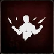 | Acceleration - Movement speed increased by 20% for 20 seconds after being revived. Cost - 1 Ritual Token |
| 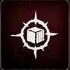 | Long Sighted - All items are highlighted at 50% greater distance. Cost - 1 Ritual Token |
| 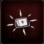 | Quartermaster - Medkits are highlighted through walls. Cost - 1 Ritual Token |
| 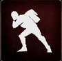 | Supply Runner - Movement speed increased by 15% when carrying a Ritual Item. Cost - 1 Ritual Token |
| 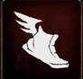 | Speedy - Movement speed increased by 7%. Cost - 1 Ritual Token |
| 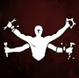 | Fast Worker - Long interacts (not including revive) are 50% faster. Cost - 3 Ritual Token |
| 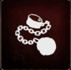 | Repellent - Movement of Azazel's minions is decreased by 50% when nearby. Cost - 3 Ritual Token |
| 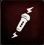 | Regeneration - UV charge regenerates 50% faster (does not work in Nightmare mode). Cost - 3 Ritual Token |
| 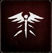 | Field Medic - Revive players 50% faster. Cost - 3 Ritual Token |
| 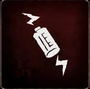 | Fully Charged - UV charge is not consumed for 20 seconds after using a battery. Cost - 3 Ritual Token |
| 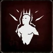 | Team Leader - Long interacts (including revive) are 100% faster when within 5 meters of any alive player. Cost - 3 Ritual Token |
| Under Pressure - Long interacts (including revive) are 150% faster when last player alive (co-op only). Cost - 5 Ritual Token |
|
| 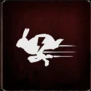 | Supercharged - Movement speed increased by 30% for 20 seconds after using a battery. Cost - 5 Ritual Token |
| 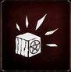 | Trapper - Last Ritual Item becomes highlighted. Cost - 5 Ritual Token |
| 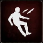 | Evader - Movement speed increased by 25% when pursued by Azazel. Cost - 5 Ritual Token |